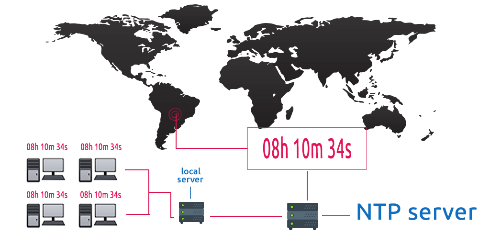
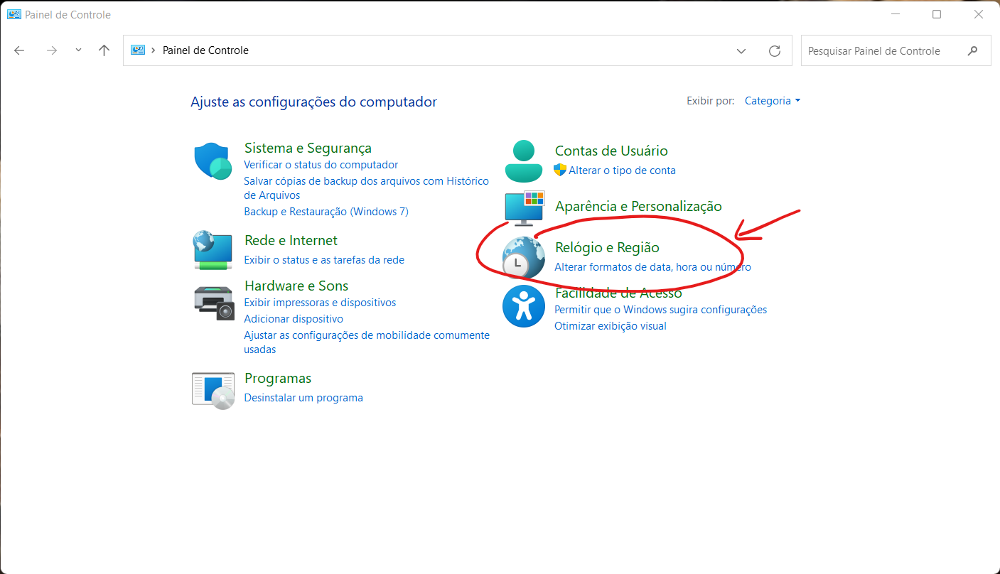
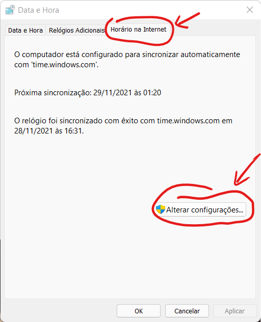
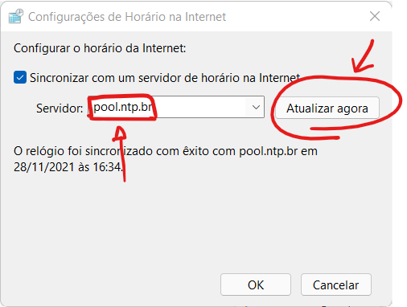

◉ Servidor NTP: Sincronize Os Relógios Dos Computadores E Servidores da Sua Rede
O NTP (Network Time Protocol) é um protocolo de rede baseado no TCP/IP. Um Servidor ntp é usado para sincronizar o
relógio dos computadores conectados a uma rede de dados de maneira precisa. A real necessidade disso é superar os
problemas causados pela latência, os quais colocam quaisquer registros sob desconfiança.
Vamos supor que um ambiente comum de trabalho mantém a rede local funcionando. Os equipamentos conectados à rede,
no entanto, não estão com os relógios sincronizados.
Sem fazer ideia das discrepâncias, a equipe começa o fato de alguns e-mails serem respondidos antes mesmo de serem
encaminhados — o que, em tese, é impossível.
Agora, imaginemos os problemas que a falta de sincronia pode causar a uma empresa que faz o monitoramento de TI.
É certo que a maioria dos logs de dados serão inconsistentes, pois não se sabe quando determinado evento ocorreu,
o que inviabiliza auditorias.
Ficou ciente da importância em sincronizar os relógios? Ótimo! Daqui em diante abordarei, neste conteúdo, o que
você precisa saber acerca do NTP. Falaremos sobre o seu conceito, origem, funcionamento, instalação e configuração.
◉ Conceito e funcionamento do protocolo NTP
O protocolo NTP é utilizado a partir de um servidor específico e dedicado, ou seja, um servidor NTP. A
função dele é estabelecer conectividade com outro servidor (geralmente uma sub-rede), o qual fornece o horário
em tempo real.
Por exemplo, o NTP conecta a sua rede ao serviço que fornece a hora certa. Este, por sua vez, capta a informação
do UTC (Coordinated Universal Time, ou Tempo Universal Coordenado), fuso horário usado como referência de cálculo
para as demais zonas horárias.
O servidor NTP, ao receber a solicitação, calcula a latência para definir a hora certa do cliente. No Brasil, o
serviço de sincronismo público é disponibilizado pelo Observatório Nacional, por meio desta página, em parceria
com o Núcleo de Informação e Coordenação do Ponto BR, o NIC.br.

◉ Surgimento do protocolo NTP
Embora muito utilizado atualmente, o NTP está em operação há mais de 30 anos, sendo um dos mais antigos protocolos
que seguem em uso. Se considerarmos o início do desenvolvimento e primeiros testes em público, o conceito está
prestes a completar 40 anos.
Todavia, foi no ano de 1985 que o protocolo NTP foi concluído e implementado nos sistemas operacionais Fuzzball e
Unix. O autor, por sua vez, foi David L. Mills, na University of Delaware.
Durante todo esse tempo o protocolo recebeu diversas atualizações e funcionalidades. Além disso, o projeto passou
a ser mantido como open source, ou seja, o código fonte é livre para ser estudado, aprimorado e integrado a outros
projetos.
Até aqui nós aprendemos o que é o protocolo NTP, para que ele serve e quando ele foi criado. Nos próximos tópicos,
abordarei o lado prático: vamos instalar um servidor NTP no Linux e configurá-lo.
Se você já teve problemas com a sincronização de horário nos seus servidores, provavelmente já ouviu falar sobre
o servidor NTP. O NTP (Network Time Protocol) é uma ferramenta essencial para manter os relógios dos computadores
sincronizados.
◉ O que é Servidor NTP?
Um servidor NTP (Network Time Protocol) é um serviço que sincroniza o horário dos sistemas de computadores em uma
rede. O NTP permite que os dispositivos na rede se ajustem para manter uma referência de tempo precisa e
coordenada. Isso é crucial para muitas aplicações, desde bancos de dados até logs de sistema, onde a precisão
do tempo é vital.
◉ Definição de NTP
O NTP é um protocolo usado para sincronizar os relógios dos computadores em uma rede. Ele pode ajustar
automaticamente o relógio do sistema para mantê-lo o mais preciso possível. O NTP usa uma hierarquia de servidores
de tempo, conhecida como “estratificação”, onde os servidores de nível superior (estrato 1) são diretamente
conectados a fontes de tempo precisas, como relógios atômicos ou GPS.
◉ Para que Serve o Servidor NTP?
O servidor NTP é utilizado para garantir que todos os dispositivos em uma rede mantenham um tempo sincronizado.
Isso é essencial para a coordenação de eventos, registros de logs precisos, segurança e outras funções críticas
de TI.
➤ Uso em Redes Corporativas
Em redes corporativas, a sincronização do tempo é fundamental para garantir que todas as atividades sejam
registradas com precisão. Logs de sistemas, transações financeiras, eventos de segurança e muito mais dependem
de um horário correto e sincronizado.
➤ Aplicações Práticas
• Bancos de Dados: A consistência de dados em bancos de dados distribuídos requer horários precisos para transações.
• Segurança: Análise de logs de eventos de segurança necessita de um tempo preciso para rastrear incidentes.
• Comunicações: Protocolos de comunicação em tempo real, como VoIP, dependem de uma sincronização de tempo precisa.
◉ Por que o Servidor NTP é Importante?
A importância do servidor NTP se dá pelo fato de que muitas operações críticas de TI dependem da precisão do
tempo. Sem um horário sincronizado, pode haver inconsistências nos dados, falhas de segurança e problemas
de comunicação.
➤ Impacto na Segurança
Manter um horário sincronizado é crucial para a segurança. Logs de segurança, detecção de intrusões e sistemas
de autenticação dependem de uma referência de tempo precisa para operar corretamente.
➤ Confiabilidade dos Dados
Para garantir a confiabilidade dos dados, especialmente em ambientes de big data e análise de dados, a precisão
do tempo é vital. Um servidor NTP ajuda a manter a integridade e a consistência dos dados ao longo do tempo.
◉ Quais são os Benefícios do Servidor NTP?
Os benefícios de utilizar um servidor NTP são diversos e impactam diretamente a eficiência e a segurança das
operações de TI.
➤ Precisão do Tempo
Um dos principais benefícios é a precisão do tempo em toda a rede. Isso garante que todas as operações sejam
realizadas de forma coordenada e precisa.
➤ Simplicidade na Configuração
Configurar um servidor NTP é relativamente simples e pode ser feito rapidamente, proporcionando benefícios
imediatos.
➤ Melhoria na Segurança
Com um horário sincronizado, é mais fácil detectar e responder a incidentes de segurança, pois os logs de eventos
são precisos e confiáveis.
➤ Consistência dos Dados
Para operações de TI que dependem de dados consistentes, como bancos de dados distribuídos, a sincronização do
tempo é essencial. Isso ajuda a evitar conflitos de dados e garante a integridade das transações.
◉ Quais são as Principais Funcionalidades do Servidor NTP?
O servidor NTP possui diversas funcionalidades que garantem a precisão e a confiabilidade do tempo em uma rede.
➤ Estratificação de Servidores
O NTP utiliza uma hierarquia de servidores para garantir a precisão do tempo. Servidores de estrato 1 recebem
o tempo diretamente de fontes precisas, como relógios atômicos, enquanto os servidores de estrato 2 se
sincronizam com os de estrato 1, e assim por diante.
➤ Ajuste Automático de Tempo
O NTP ajusta automaticamente o relógio do sistema para mantê-lo preciso, compensando possíveis desvios de tempo.
➤ Redundância
Configurar múltiplos servidores NTP oferece redundância, garantindo que, se um servidor falhar, outros estarão
disponíveis para manter a sincronização do tempo.
➤ Monitoramento e Diagnóstico
Ferramentas de monitoramento e diagnóstico ajudam a garantir que a sincronização do tempo esteja funcionando
corretamente e permitem identificar e corrigir problemas rapidamente.
◉ Instalação de um NTP Server no Linux
A situação mais comum de instalação do NTP é a partir de um servidor local que é acessado por um conjunto de
computadores. Sendo assim, faremos com que o servidor local sincronize os relógios de todos os dispositivos,
inclusive roteadores e outros equipamentos.
Tendo em vista garantir o máximo de eficiência — e outras vantagens —, o processo será explicado com base nos
servidores Linux (mais precisamente o Ubuntu), até por ele estar presente na maioria das empresas ao redor do
planeta — fato que não provém do acaso.
Com o sistema operacional preparado, abra o terminal do Linux para atualizar o repositório e, em seguida, instalar
o NTP server. Vale frisar que o protocolo será instalado, também, nas máquinas clientes. Digite os seguintes
comandos:
sudo apt update
sudo apt install ntp -y
Nos computadores que fazem parte da rede local, instale os recursos necessários para estabelecer a sincronia com
o servidor — o que aprenderemos a fazer no próximo tópico.
sudo apt update
sudo apt install ntpdate -y
Para que as novas instalações funcionem é preciso fazer as configurações. Vamos ao passo a passo?
◉ Configuração do servidor NTP Linux
Primeiramente, pelo lado do servidor, usando um editor de texto, abra o arquivo de configuração do NTP.
sudo vim /etc/ntp.conf
Acrescentaremos algumas linhas a este arquivo para registrar os servidores NTP para sincronia.
server 0.ubuntu.pool.ntp.org iburst
server 1.ubuntu.pool.ntp.org iburst
server 2.ubuntu.pool.ntp.org iburst
server 3.ubuntu.pool.ntp.org iburst
Para isso, utiliza-se o site do NTP Pool Project, que disponibiliza os endereços. Neste exemplo em especial,
selecionamos a zona BR para adicionar os servidores NTP mais próximos.
server 0.br.pool.ntp.org
server 0.south-america.pool.ntp.org
server 2.south-america.pool.ntp.org
O próximo passo é adicionar a rede local para que ela seja sincronizada. Supondo que o endereço IP da rede seja
192.168.104.0/24, insira-o de acordo com a sintaxe próxima linha que adicionaremos:
restrict 192.168.104.0 mask 255.255.255.0
Depois de editar o arquivo de configuração, salve as alterações e feche-o. Digite no terminal: sudo service ntp
restart e, em seguida, sudo systemctl enable ntp. Isso fará com que o NTP seja reiniciado junto com o boot do
sistema operacional. Para se certificar de que a rede está conectada ao NTP server, digite ntpq -p.
Se tudo ocorreu como esperado, o seu servidor NTP Linux já está funcionando e, também, pronto para sincronizar
os relógios. Entretanto, é necessário que o servidor receba solicitações; a partir do computador do cliente,
digite:
sudo ntpdate -o 192.168.104.254
Em suma, apenas acionamos o NTP para que a máquina seja sincronizada à rede que cadastramos. A partir de agora
os relógios serão sincronizados automaticamente.
Com o servidor NTP configurado, conforme você aprendeu no decorrer da leitura, a falta de sincronia horária
deixará de ser um problema na sua rede. Afinal, ela contará com um servidor dedicado que eliminará as brechas
de segurança que envolvam a latência.
◉ Sincronização do Windows
O Windows já possui, por padrão, uma implementação do NTP, ou SNTP, a depender da versão utilizada.
Recomendamos utilizar esta função já presente no sistema, nativa, para manter o relógio correto. A
sincronização já vem ativada por padrão, mas não utilizando os servidores do NTP.br. Para configurar
os servidores de hora do NTP.br, siga os seguintes passos:
1. Abra o Painel de Controle e clique em Relógio e Região

2. Clique em seguida em Data e Hora
3. Clique na aba Horário na Internet e depois em Alterar configurações

4. Por fim, digite o nome do servidor pool.ntp.br e depois clique em Atualizar agora . Você verá uma mensagem
"O relógio foi sincronizado com êxito com pool.ntp.br em [data e horário atuais]."

Atenção: Não se recomenda a utilização de dispositivos com sistema operacional Windows como servidores de
tempo, com exceção do uso de servidores domain controller no Active Directory, que sincronizam automaticamente
os demais dispositivos no mesmo domínio. Não se recomenda a instalação da implementação de referência do NTP,
disponível em ntp.org, ou de outros softwares para as funções de cliente ou servidor NTP em dispositivos
utilizando Windows.